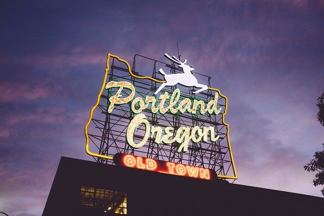

The Saturday City: Portland Travel Guide
Last Updated: February 29, 2017
Portland, Oregon is a city that has something for everyone. From its beautiful parks to its vibrant food scene, Portland is a city that truly comes alive on Saturdays.
One of the most popular destinations on a Saturday in Portland is the Portland Farmers Market. The market is the perfect place to sample local produce, artisan cheeses, and handmade crafts. The market is also home to a variety of food carts, which offer some of the best food in the city. For those looking for a more active Saturday, the city has a variety of hiking trails and parks to explore. Forest Park is a must-visit destination, with its miles of trails and stunning views of the city.
Another great way to spend a Saturday in Portland is to explore the city's thriving art scene. The Portland Art Museum is home to an extensive collection of contemporary and modern art, while the Alberta Arts District offers a variety of galleries and studios to explore. Finally, no visit to Portland is complete without a visit to Powell's City of Books. The massive bookstore is a Portland institution and is home to over one million books.
In short, Portland is a city that truly comes alive on Saturdays. Whether you're looking for great food, beautiful scenery, or a thriving arts scene, Portland is the perfect destination for a weekend getaway.